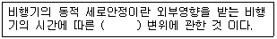
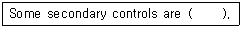
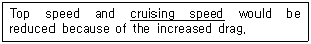

항공기체정비기능사 (2007-01-28 기출문제)
1과목: 비행원리
1. 압력을 표시하는 단위에 속하지 않는 것은?
- N/m2
- mmHg
- mmAq
- lb-in
(정답률: 71%)

2. 유관의 입구지름이 20cm 이고 출구의 지름이 40cm 이다. 이 때 입구에서의 유체속도가 4m/s 이면출구에서의 유체 속도는 약 몇 m/s 인가?
- 1
- 2
- 4
- 16
(정답률: 51%)
3. 비행기가 정상선회를 하기 위해서는 어떻게 하여야 하는가?
- 원심력과 구심력은 크기가 같고 방향도 같아야 한다.
- 원심력과 구심력은 크기가 같고 방향이 반대이어야 한다.
- 원심력과 구심력은 크기가 다르고 방향이 같아야 한다.
- 원심력과 구심력은 크기가 다르고 방향이 반대이어야 한다.
(정답률: 76%)
4. 비행기가 공기 중을 수평 등속도 비행할 때 비행기에 작용하는 힘이 아닌 것은?
- 추력
- 항력
- 중력
- 가속력
(정답률: 89%)
5. 비행기의 수직축에 대해서 기수를 오른쪽으로 회전시키는 모멘트가 양(+)의 빗놀이 모멘트 이다. 이 빗놀이 모멘트(N)를 식의 계수형으로 나타낸 것은? (단, q : 동압, S : 날개면적, b : 날개길이 Cn : 빗놀이 모멘트 계수) (문제 오류로 보기가 없습니다. 정확한 보기 내용을 아시는분게서는 오류 신고를 통하여 작성 부탁 드립니다. 정답은 3번 입니다.)
- 보기 없음
- 보기 없음
- 보기 없음
- 보기 없음
(정답률: 84%)
6. 다음( )안에 알맞은 내용은?

- 속도
- 하중
- 진폭
- 양력
(정답률: 60%)
7. 헬리콥터의 지면효과가 있을 때 일어나는 현상으로 틀린 것은?
- 양력의 크기가 증가한다.
- 항력의 크기가 증가한다.
- 회전날개 깃의 받음각이 증가하게 된다.
- 같은 기관의 출력으로 많은 무게를 지탱 할 수 있다.
(정답률: 62%)
8. 마하수에 대한 설명으로 가장 올바른 것은?
- 비행속도가 일정하면 마하수는 온도가 높을수록 비례하여 커진다.
- 비행속도가 일정하면 고도에 관계없이 마하수도 일정하다
- 마하수의 단위는 m/s 이다.
- 마하수는 음속에 반비례한다.
(정답률: 59%)
9. V-n선도에 대한 설명으로 가장 올바른 것은?
- 항공기 속도에 대한 양력과 항력의 관계를 표시한다.
- 받음각의 변화에 따른 양력의 증가 또는 감소를 나타낸다.
- 비행속도와 하중배수와의 관계로서 항공기의 안전비행 한계를 표시한다.
- 표준 대기상태에서 고도에 따른 압력, 밀도, 온도 등의 변화를 보여 준다.
(정답률: 52%)
10. 무게가 3000kg,날개면적 20m2 인 비행기가 해발고도에서 양력계수 0.96인 상태를 등속수 평비행을할 때 비행기의 최소속도를 구하면 약 얼마인가? (단, 공기의 밀도 p=0.123kg∙s2/m4)
- 90km/h
- 180km/h
- 250km/h
- 360km/h
(정답률: 47%)
11. 프로펠러 깃각을 가장 올바르게 설명한 것은?
- 프로펠러의 허브와 캠버선이 이루는 각이다.
- 프로펠러의 허브와 시위선이 이루는 각이다.
- 프로펠러의 회전면과 시위선이 이루는 각이다.
- 프로펠러의 회전면과 캠버선이 이루는 각이다.
(정답률: 62%)
12. 비행기가 수평비행이나 급강하로 속도가 증가하여 천음속영역에 도달하게 되면 한쪽 날개가 충격실속을 일으켜서 갑자기 양력을 상실하여 급격한 옆 놀이를 일으키는 현상을 무엇이라 하는가?
- 턱 언더
- 날개 드롭
- 피치 업
- 디프 실속
(정답률: 55%)
13. 2개의 주 회전 날개가 서로 반대 방향으로 회전하므로 각각의 회전날개에서 발생하는 토크가 상쇄되어 조종성이 좋은 회전날개 헬리콥터는?
- 단일 회전날개 헬리콥터
- 직렬식 회전날개 헬리콥터
- 병렬식 회전날개 헬리콥터
- 동축 역회전식 회전날개 헬리콥터
(정답률: 71%)
14. 다음 중 대기권에서 전리층이 존재하는 곳은?
- 중간권
- 열권
- 극외권
- 성층권
(정답률: 76%)
15. 비행기 날개에서 압력중심에 대한 설명으로 가장 관계가 먼 내용은?
- 압력이 작용하는 합력점을 압력 중심이라 한다.
- 받음각이 클수록 압력중심은 앞으로 이동 한다.
- 비행기가 급강하할 때 압력중심은 전방으로 이동한다.
- 압력중심의 이동과 비행기의 안정성과는 밀접한 관계가 있다.
(정답률: 46%)
16. 항공기 정비 관련용어 중 “오버홀 시간간격“을 가장 올바르게 표현한 것은?
- TRP
- MPL
- TBO
- FOD
(정답률: 67%)
17. 장비나 부품 중에서 시한성 정비방식에 의하지 않고 정기적인 육안검사나 측정 및 기능시험 등의수단에 의해 장비나 부품의 감항성이 유지되고 있는지를 확인하는 정비방식은 무엇인가?
- 신뢰성정비
- 상태정비
- 작동점검
- 기능점검
(정답률: 57%)
18. 다음 문장의( )안에 해당되지 않는 것은?

- flap
- ailerons
- spoilers
- leading edge device(slats)
(정답률: 44%)
19. 높이 게이지 측정작업에 대한 안전 및 유의사항으로 가장 관계가 먼 것은?
- 측정대는 깨끗한 일반 작업대 위에 놓고 측정 작업을 한다.
- 스크라이버를 필요 이상으로 길게 내밀지 않도록 해야 한다.
- 높이 게이지의 눈금을 읽는 눈의 높이는 눈금선과 수평 방향이어야 한다.
- 오프셋 스크라이버를 끼우고 사용할 때는 게이지 베이스면에 닿을 수 있어, 조심스럽게 측정 작업을 해야 한다.
(정답률: 45%)
20. 다음 중 다이 페네트란트 검사의 절차에 해당 되지 않는 것은?
- 전처리
- 침투
- 현상
- 현미경 투시
(정답률: 68%)
2과목: 항공기정비
21. 금속을 두드려서 나오는 음향으로 결함을 검사하는 방법은?
- 타진법
- 가압법
- 침지법
- 초음파법
(정답률: 88%)
22. 귀 보호 장구 중 저음에서 부터 고음까지 차음할 수 있는 귀마개는 몇 종인가?
- 제 0 종
- 제 1 종
- 제 2 종
- 제 3 종
(정답률: 43%)
23. 밑줄 친 부분을 의미하는 올바른 영어는?

- 최고속도
- 상승속도
- 순항속도
- 경제속도
(정답률: 76%)
24. 항공기의 정비관련 용어에 대한 설명 중 틀린 것은?
- 수리 : 고장이나 파손된 상태를 본래의 상태로 회복시키는 것이다.
- 분해점검 : 구성품이 지침서에 명시된 허용 한계값 이내인지를 확인하기 위해서 분해, 검사 및 점검하는 것이다.
- 구성품 : 특정형태를 유지하고 있어 단독으로 떼어 내거나 또는 부착이 가능하지만 분해하면 본래 기능이 상실된다.
- 결함 : 항공기의 구성품 또는 부품 고장으로 계통이 비정상적으로 작동하는 상태이다.
(정답률: 75%)
25. 라쳇 핸들에 대한 설명으로 가장 올바른 것은?
- 원통 모양의 물건을 표면에 손상을 주지 않고 돌리기 위해 사용한다.
- 협소한 공간에서 단단하게 조여져 있는 볼트나 너트를 풀 때 사용한다.
- 단단하게 조여져 있는 볼트나 너트를 풀거나 더욱 조이는데 사용한다.
- 협소한 공간에서 매우 유용하며, 풀거나 조일 때 한쪽 방향으로만 작용하며, 단단하게 조여져 있는 볼트나 너트에는 사용 하지 않는다.
(정답률: 48%)
26. 발생되는 사고가 불안전한 상태에 해당되지 않는 것은?
- 물리적 위험상태
- 정돈 불량
- 건물상태의 불안전
- 주위집중 산만
(정답률: 50%)
27. 최신형 항공기 조종계통의 비상작동을 위한 동력 공급원으로 이용하는 것은?
- 수소
- 산소
- 히드라진
- 할로겐
(정답률: 73%)
28. 복선식 안전결선 작업에서 고정 작업을 해야 할 부품이 4~6in의 넓은 간격으로 떨어져 있을 때, 연속적으로 고정할 수 있는 부품의 수는 최대 몇 개로 제한되어 있는가?
- 2개
- 3개
- 4개
- 5개
(정답률: 76%)
29. 금속표면이 국부적을 깊게 침식되어 콩알만한 작은 점을 만드는 부식은?
- fatigue corrosion
- pitting corrosion
- stress corrosion
- galvanic corrosion
(정답률: 50%)
30. 항공기 관의 연결 계통에서 잦은 분리가 필요한 부분에 사용되는 연결 방식은?
- 플레어관 접합 방식
- 비드에 의한 연결 방식
- 스웨이징 접합기구 방식
- 플레어리스 접합기구 방식
(정답률: 47%)
31. 다음 중 평와셔의 사용 역할이 아닌 것은?
- 볼트, 너트의 풀림을 방지한다.
- 부품의 조이는 힘을 분산시켜, 평균화 함
- 볼트나 스크루의 그립 길이를 조정하는데 사용한다.
- 구조물과 장착 부품을 충격과 부식으로부터 보호한다.
(정답률: 37%)
32. 다음 중 항공기의 세척에 사용되는 안전 솔벤트는?
- 메틸크로로포름
- 방향족 나프타
- 메틸에틸케톤
- 케로신
(정답률: 49%)
33. 다음 중 6각 구멍을 가진 볼트를 풀거나 조일때 사용하는 공구는?
- adjustable wrench
- allen wrench
- barrel
- thimble
(정답률: 54%)
34. C급 화재에 사용되는 소화 방법으로 가장 거리가 먼 것은?
- CO2소화기
- CBM 소화기
- 분말 소화기
- 물
(정답률: 82%)
35. 항공기를 견인할 때 견인차의 최대 속도는 얼마로 제한하는가?
- 시속 8km
- 시속 16km
- 시속 24km
- 시속 32km
(정답률: 73%)
36. 여압식 동체에서 공기압력을 유지하기 위한 격벽판으로 사용되기도 하고, 동체가 비틀림에 의해 변형되는 것을 막아주는 동체의 부재는?
- 프레임
- 스트링거
- 세로대
- 벌크헤드
(정답률: 48%)
37. 회전날개 항공기의 조종계통으로 가장 거리가 먼 것은?
- 리트리팅 조종계통
- 사이클릭 피치조종계통
- 켈렉티브 피치조종계통
- 방향조종 계통
(정답률: 50%)
38. 케블러라 불리우는 섬유형 강화재는?
- 아라미드 섬유
- 알루미나 섬유
- 보론 섬유
- 탄소 섬유
(정답률: 64%)
39. 운항자기무게에 속하는 것은?
- 유압계통의 작동유 무게
- 연료계통의 사용 가능한 연료의 무게
- 승객의 무게
- 화물의 무게
(정답률: 54%)
40. 케이블 조종계통 정비에 대한 설명 중 가장 관계가 먼 내용은?
- 케이블 손상의 주원인은 풀리나 페어리드 및 케이블 드럼과의 접촉에 의한 것이다.
- 케이블 손상은 헝겊을 케이블에 감고 길이 방향으로 움직여 보아 알 수 있다.
- 부식된 케이블은 브러쉬로 부식을 제거한 후 솔벤트 등으로 깨끗이 세척한다.
- 케이블의 장력 점검은 조종계통이 완전히 조절된 상태에서 케이블이 제한된 장력범위 내에있는가를 검토하는 작업이다.
(정답률: 55%)
3과목: 항공기체
41. 다음은 헬리콥터의 주 회전날개 궤도점검을 스트로보스코프를 사용할 때의 각종 장비와 장착부분을 짝지어 놓은 것이다. 가장 올바르게 표시된 것은?
- 회전날개 끝과 차단장치
- 회전경사판과 반사표적
- 회전날개 기스이 선단과 점검용 깃발
- 고정경사판과 자기발생장치
(정답률: 26%)
42. 일반적으로 항공기 타이어의 원료로 사용하는 고무는?
- 불소고무
- 합성고무
- 부틸고무
- 천연고무
(정답률: 37%)
43. 알루미늄 합금 중 2017의 설명으로 가장 올바른 것은?
- 파괴 인성이 좋고 피로특성에도 우수하므로 인장하중이 큰 날개 밑면의 스킨이나 동체의 스킨에 사용된다.
- 연질 리벳으로 많이 사용된다.
- 초 두랄루민이라 불리우며 소형 항공기 날개의 스킨 등에 사용된다.
- 두랄루민으로 불리우며 오직 리벳으로만 사용된다.
(정답률: 41%)
44. 합금강의 분류에서 SAE 1025에 대한 설명으로 옳은 것은?
- 탄소강을 나타낸다.
- 니켈강을 나타낸다.
- 합금원소는 크롬이다.
- 탄소의 함유량은 5%이다.
(정답률: 62%)
45. 세장비에 대한 설명 중 가장 올바른 것은?
- 세장비는 기둥의 길이를 기둥 단면의 회전 반지름으로 나눈 것이다.
- 세장비가 큰 봉은 인장강도에 의하여 파괴된다.
- 세장비가 작은 기둥은 인장강도에 의하여 파괴된다.
- 일반적으로 연강인 경우에 세장비가 90보다 크면 짧은 기둥이라고 한다.
(정답률: 48%)
46. 헬리콥터의 스키드 기어형 착륙장치에서 스키드 슈의 사용 목적을 가장 올바르게 표현한 것은?
- 휠을 스키드에 장착할 수 있게 하기 위해
- 회전날개의 진동을 줄이기 위해
- 스키드가 지상에 정확히 닿게 하기 위해
- 스키드의 부식과 손상의 방지를 위해
(정답률: 68%)
47. 항공기 출입문 중 동체 외벽의 안으로 여는 형식은?
- 플러그형
- 티형
- 팽창형
- 밀폐형
(정답률: 66%)
48. 헬리콥터의 동체구조 형식 중 트러스형 구조에 대한 설명으로 옳지 않는 것은?
- 일반적으로 강관을 삼각형태로 용접하여 만든다.
- 중량에 비해 비교적 높은 강도를 가지고 있다.
- 세미모노코크 동체구조 형식에 비해 유효 공간이 크다.
- 모노코크 동체구조 형식에 비행 정비가 쉽다.
(정답률: 63%)
49. 다음 중 항온 열처리에 해당하지 않는 것은?
- 마템퍼링
- 마퀜칭
- 오스템퍼링
- 노말라이징
(정답률: 50%)
50. 헬리콥터가 전진 비행을 할 때 수평 안정판이 하는 역할로 가장 올바른 것은?
- 전진 비행시 수평안정판의 공기력이 위로 작용하여 수평을 유지시킨다.
- 전진 비행시 수평 안정판의 공기력이 아래로 작용하여 수평을 유지시킨다.
- 주 회전날개의 수평을 유지시킨다.
- 꼬리회전날개가 손상되는 것을 방지한다.
(정답률: 51%)
51. 구조상의 최대하중으로 기체의 영구변형이 일어나더라도 파괴되지 않는 하중을 무엇이라 하는가?
- 한계하중
- 최고하중
- 극한하중
- 돌풍하중
(정답률: 56%)
52. 항공기에 작용하는 하중 중 시간에 따라 크기가 변화하면서 작용하는 동하중이 아닌 것은?
- 반복하중
- 교번하중
- 충격하중
- 표면하중
(정답률: 34%)
53. 단일 회전날개 헬리콥터에서 연료탱크는 대부분 어느 곳에 위치하는가?
- 테일 붐
- 파일론
- 동체
- 날개
(정답률: 66%)
54. 대형 항공기에서 일반적으로 사용되는 브레이크 형식으로 가장 올바른 것은?
- 팽창튜브 브레이크
- 싱글 디스크 브레이크
- 멀티 디스크 브레이크
- 세그먼트 로터 브레이크
(정답률: 71%)
55. 힘과 모멘트에 대한 설명 중 가장 올바른 내용은?
- 모멘트는 외력에 대한 구조 내부에서 생기는 힘이다.
- 평면 구조물의 평형방정식은 힘의 회전능률로서 길이와 힘의 곱으로 나타낸다.
- 힘은 크기, 방향, 작용점을 가지며 벡터량 이다.
- 방향과 작용점만을 가지고 물리량은 스칼라량이라 한다.
(정답률: 64%)
56. 도면의 주요 4요소와 관계가 없는 것은?
- 설계란
- 표제란
- 변경란
- 일반주석란
(정답률: 34%)
57. 일정한 응력을 받는 재료가 일정한 온도에서시간이 경과함에 따라 하중이 일정하더라도 변형률이변화하는 현상을 무엇이라 하는가?
- 항복
- 소성
- 크리프
- 피로
(정답률: 60%)
58. 다음 중 항공기 구조의 특정위치를 쉽게 알 수 있도록 항공기상 위치를 표시하는 방법이 아닌 것은?
- 동체 위치선
- 동체 수위선
- 날개 위치선
- 날개 수위선
(정답률: 41%)
59. 날개의 구조부재 중 날개골 모양을 하고 있으며, 날개외피에 작용하는 하중을 날개보에 전달하는 역할을 하는 것은?
- 앞전
- 리브
- 스트링거
- 스포일러
(정답률: 71%)
60. 항공기 재료에 쓰이는 금속 중 가장 가벼운 금속으로 장비품의 하우징 등에 사용되는 재료는?
- 알루미늄
- 마그네슘
- 티탄
- 니켈
(정답률: 68%)